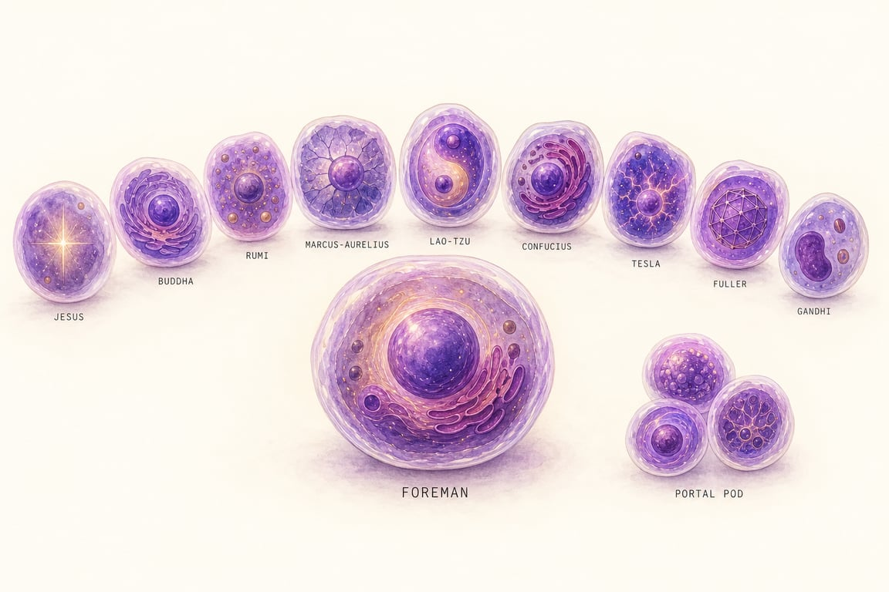
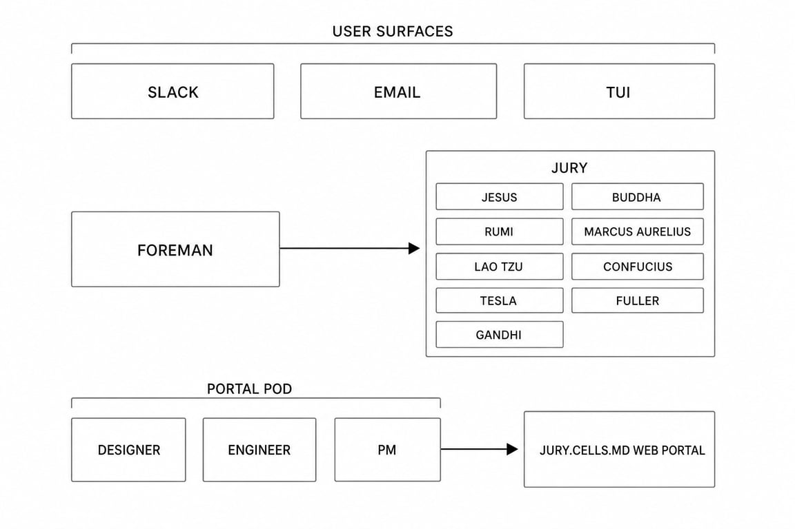

Port of ~/Projects/archived/jurypool into the cells substrate. How the colony is coordinated, plus the cell roster and open decisions.

All 13 cells birthed 2026-05-16 21:44–22:01. Each has its own well, IP, pi (or claude-code) installed, and a working <name>.cells.md Worker. Talk verified end-to-end on the ChatGPT subscription path (openai-codex/gpt-5.5/medium via proxy.cells.md):
Substrate fix applied per-cell (DNA bake patches wrong pi-ai path — see BRINGUP.md). Personas live; codex/gpt-5.5 live; deepseek as fallback. Still V1-pending: port jurypool-extension (sprite → cells), set up deliberations.db, first end-to-end deliberation through Foreman, portal scaffold.
The user surfaces are the control plane. You ask a question via TUI, Slack DM, or the portal at jury.cells.md. Foreman is the only cell that hears you directly. Foreman frames the question, fans it out to all 9 jurors in parallel via the deliberate tool, picks 2–3 for deep follow-ups, and synthesizes a verdict back. Verdicts persist in a SQLite file inside Foreman's well; the portal reads them by hitting Foreman's per-cell API layer (the substrate primitive — same Worker/DO as the web surface, just routed to a cell-side handler instead of a static asset).
One question → one verdict, in five stages. Each stage either runs on Foreman (1, 2, 4, 5) or fans out across the jury (3).
deliberate(question). Question fans out to all 9 jurors in parallel.dream cycle consolidates new signal into durable memory files — so over time, the jury learns the user.
Thirteen cells. One CoS (Foreman) · nine thinker cells (the jury, uniform spec, persona-differentiated) · three builder cells (the portal pod, mixed harnesses).
| cell | role | harness | model · effort | kit | repo |
|---|---|---|---|---|---|
foreman ● |
CoS | pi | gpt-5.5 · high | pete/jurypool |
|
| jury — 9 thinker cells, uniform spec | |||||
jesus ● | thinker | pi | gpt-5.5 · medium | — | |
buddha ● | thinker | pi | gpt-5.5 · medium | — | |
rumi ● | thinker | pi | gpt-5.5 · medium | — | |
marcus-aurelius ● | thinker | pi | gpt-5.5 · medium | — | |
lao-tzu ● | thinker | pi | gpt-5.5 · medium | — | |
confucius ● | thinker | pi | gpt-5.5 · medium | — | |
tesla ● | thinker | pi | gpt-5.5 · medium | — | |
fuller ● | thinker | pi | gpt-5.5 · medium | — | |
gandhi ● | thinker | pi | gpt-5.5 · medium | — | |
| portal pod — 3 builder cells, mixed harnesses | |||||
portal-designer ● |
builder | pi | gpt-5.5 · medium | pete/jurypool-portal |
|
portal-engineer ● |
builder | claude-code | opus-4-7 · high | pete/jurypool-portal |
|
portal-pm ● |
builder | pi | gpt-5.5 · medium | pete/jurypool-portal |
|
Things flagged port in the cast above. Pi's library is canonical. Skill-first, CLI only when an external API genuinely demands it. Each row below is work the cells team owes the colony before bringup can complete.
| capability | type | source | effort | shape |
|---|---|---|---|---|
jurypool-extension | pi extension | existing at archived/jurypool/.pi/extensions/jury-pool/ | low | Already pi-shape. Move + re-test. TUI widgets + deliberate tool. |
memory | pi skill | existing at archived/jurypool/.pi/skills/memory/ | none | Pi-canonical. Direct lift. |
dream | pi skill | existing at archived/jurypool/.pi/skills/dream/ | none | Pi-canonical. Direct lift. |
design-system | pi skill | — | medium | Author from scratch. Codifies juror cards, deliberation views, portal aesthetic. |
nextjs | claude-code skill | — | low | App-router patterns, layouts, server actions. Most likely already exists in claude-code skill catalog — verify. |
convex-oss | claude-code skill | — | medium | Self-hosted OSS Convex (not the hosted product). Schema, queries/mutations, realtime subscriptions, docker setup. Likely new authoring work. |
Builder cells get repos. Thinker cells don't — their substance is their memory, which lives in their well. Repos live under pete/ (no GitHub orgs).
| repo / artifact | steward | contents |
|---|---|---|
pete/jurypool | foreman | The colony home — colony.md, cells/, design/, artifacts.json. |
pete/jurypool-portal | portal pod (3 cells) | The jury.cells.md web UI. Designer + engineer + PM all push. |
per-juror site (<juror>.cells.md) | each juror | Each juror writes site/public/ in own well; the cells Worker serves. No git repo; live cells push directly. |
| juror memories | each juror | Lives at ~/.pi/memory/ inside each well. Survives sleep/wake. Cell is the memory. |
Decisions still pending before bringup can begin. Each one is a single call the user owes Creator.
Resolved: cast locked · modes dropped · V2 dropped · email dropped · stack = Next.js + SQLite (in Foreman's well) · Slack handled by channels infra · portal↔Foreman uses existing cells comms layer.
jurypool-extension from sprite-shape to cells-shape. Original uses sprite.exec to fan out to jurors; the cells version swaps that for cells talk <juror> (or the host-bridge equivalent). Estimated few hours of straightforward porting.persona-md from archived/jurypool/.pi/agents/<juror>.md into the corresponding cell's well (IDENTITY/SOUL overrides). Each juror will then respond in character.cells channel-add and Foreman becomes reachable from Slack DM.Rough architecture sketch generated by pix as a complement to the structured diagram above. Useful for sharing or quick visual reference; defer to Section 1 for the canonical view.
